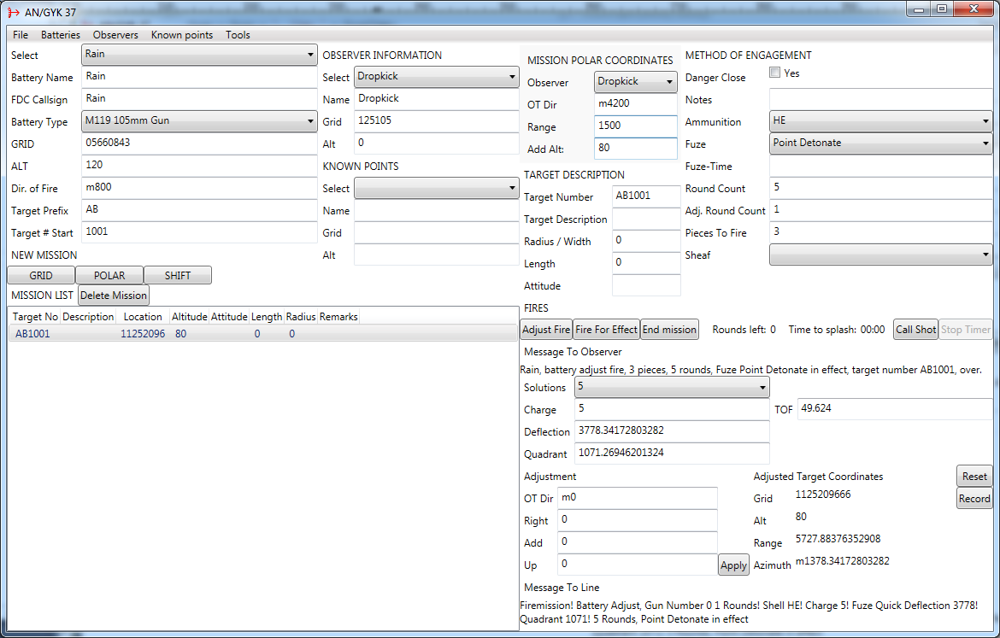

Introduction
This is a C#, WPF, .Net 4.0 reimplementation of the AN/GYK-37 Battery Computer System (BCS).
Credits for ACE and the BCS go to Nou and jaynus, and all the other ACE contributors.
What does this thing do?
This BCS supports all the ACE mortars (M224 60mm, M252 81mm, 2B14 82mm, Tampella 120mm) and the M119 105mm howitzer. Its primary use is the recording and calculation of fire solutions for ground fire support missions.
The rangetables are not completely in sync with the actual ballistics of the artillery systems. This is an ACE bug - the rangetables were taken directly from the game.
Disclaimer
This thing is provided as-is, with no implied or express guarantees or warranties, etc. etc., for entertainment purposes only.
There is specifically no guarantee that it won't completely shit itself on you when that immediate suppression gets called in.
Screenshot

Changelog
Github Repo
Version 1.0.0.4
- Better MTO and MTB
- Save/Restore system
- New layout
- Lots of other fixes
Version 1.0.0.3
- Fixed number parsing bug - should work on all language versions of Windows now
- Fixed rangetable display
Version 1.0.0.2
- Missions can be recorded and deleted
Version 1.0.0.1
- Added Tampella
- Accurate Fuzes
- Fixed MTO, added Message To Line
- Made it crash less
Version 1.0.0.0
- Initial Release
- Stuff!
- Lots of bugs and horrible code